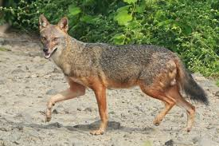

|  | In Kenya, three jackal species—the golden, side-striped, and black-backed—are found, with the black-backed jackal being the most common and diurnal. They are opportunistic omnivores, often seen in pairs or small groups, and play a role in scavenging and controlling populations of smaller animals. |